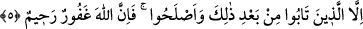

vazgeçmesi telkininde bulunması güzel sayılmıştır. Had sâbit olduktan sonra artık ne
had talebinde bulunanın ne de imamın onu affetmesi câiz değildir. Çünkü o artık
Allah’ın kesin bir hakkı hâline gelmiştir. Yine bu sebeple belli bir mal karşılığı anlaşma
yapılarak haddin iptâli de câiz olmaz.
Zinâ isnad eden, had sâbit olmadan önce tevbe ederse had düşer. Çocuk veya deli,
hanımına yahut yabancı birine zinâ isnâdında bulunursa ne o anda ne de çocuk bülûğa
erip deli akıllandığında her ikisi için de ne had ne de liân söz konusudur. Fakat ıslah
maksadıyla ta‘zir olunurlar. Bir kimse bir şahsa bir kaç kez zinâ isnâdında bulunursa
bakılır; eğer bunlarla tek bir zinâyı kasdetmişse sadece bir had vacib olur. Yok eğer
bunlarla “Zeyd’le zinâ etti, Amr’la zinâ etti...” şeklinde farklı zinâları kasdetmişse,
kasdedilen zinâ adedince had vâcib olur. Nitekim el-Kebîr’de böyle geçmektedir.
“Ve artık onların şâhidliğini hiçbir zaman” yâni tevbe etseler ve hâllerini
düzeltseler de hayatları boyunca “kabul etmeyin.”
Bu ifâde “sopa vurun” ifâdesine atfedilmiştir. Kendisinde sakındırma mânâsı olduğu
için onun hükmüne dâhil ve onu tamamlayıcı mâhiyettedir. Çünkü sopa vurulması
bedene elem verdiği gibi şâhidliğin kabûl edilmemesi de kalbe acı verir. Zinâ isnâdında
bulunan, iftirâ ettiği kimseye diliyle eziyette bulunduğundan, yaptığına tam bir karşılık
olmak üzere dilinin bir kısım faydalarından mahrûm kalmakla cezâlandırılmıştır.
Âyette şâhidliğin reddi, zinâ isnâdı sırasında şâhidlik ehliyetleri sâbit kimselere
tahsis edilmektedir. İşte zinâ isnâdı sebebiyle had uygulanmış kâfirin müslüman
olduktan sonra şâhidliğinin kabul edilmesindeki sır budur. Çünkü o kâfirken şâhidlik
yapma ehliyetine sâhip değildi, ancak müslüman olduktan sonra bu ehliyete sâhip oldu.
Dolayısıyla âyetteki red, onu içine almaz.
Buna göre âyetin mânâsı şöyle olur: Zinâ isnâdı sırasında şâhidlik yapmaya salâhiyetli
oldukları halde zinâ isnâdında bulunup bunu ispatlayamayanların tevbe edip hâllerini
düzeltseler de ömürleri boyunca hiçbir şâhidliklerini kabul etmeyin.
Başkaları değil “Onlar tamamen günahkârdırlar.” Fâsıklıkta, tâattan çıkma ve
sınırları aşmada kâmil kimselerdir. Sanki günahkârlar arasında “fâsık” ismini almaya
sadece onlar müstehaktırlar.
el-Kebîr’de der ki: “Bu âyet zinâ isnâdında bulunmanın büyük günahlardan olduğunu
ifâde etmektedir. Çünkü fâsık ismi, ancak büyük günah işleyenler için kullanılır.”
5. Ancak bundan sonra tevbe edip ıslah olanlar müstesnâdır. Allah çok bağışlayıcı
ve merhametlidir.
“Ancak bundan sonra” yâni bu büyük günahı işledikten sonra “tevbe edip ıslah
olanlar” haddin tatbikine rızâ göstermek ve iftirâ ettiği kimseden helâllik dilemek gibi